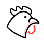
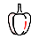

로그인
회원가입
소고기
한우 암소
수입소
한우 수소
소고기 선물세트
육우 수소
세절&분쇄 소고기
양념 소고기
낱개(소분)소고기
숙성 소고기
돼지고기
한돈
수입돼지
낱개 돼지고기
세절 돼지고기
양념 돼지고기
돼지고기 선물세트
닭ㆍ오리고기
국산닭
수입닭
국산오리
세절 닭ㆍ오리
양념 닭ㆍ오리
양ㆍ말고기
수입양
수입염소
낱개 양
세절&분쇄 양
양고기 선물세트
국산말
소고기
돼지고기

닭ㆍ오리
양ㆍ말
세절&분쇄육
가공식품

농산물
수산물
금주 최다 판매리스트
[스테이커스] 본 인(Bone-in) 스 테이크 세트 (티본, 엘본)
1위
2위
3위
4위
5위
카테고리별 최다 판매리스트
소고기
돼지고기
닭ㆍ오리
[스테이커스] 본 인(Bone-in) 스 테이크 세트 (티본, 엘본)
1위
2위
3위
4위
5위
고객님들의 생생한 포토후기
업진살 - 국산 | 한우조아 - 2등급/10대
Lv.21
Meatbox
3
고기가 넘무 맛있어요!!!


 3
3